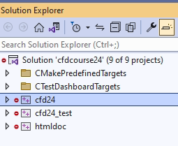

Loading...
Searching...
No Matches
Установка и сборка проекта
Table of Contents
Описанная ниже процедура собирает проект в отладочной конфигурации. Для проведения необходимых модификаций для сборки релизной версии смотри Сборка релизной версии.
Подготовка
- Для сборки проекта необходимо установить git и cmake>=3.0
В Windows необходимо скачать и установить диструбутивы:
- https://github.com/git-for-windows/git/releases/download/v2.38.1.windows.1/Git-2.38.1-64-bit.exe
- https://github.com/Kitware/CMake/releases/download/v3.24.2/cmake-3.24.2-windows-x86_64.msi
При установке cmake проследите, что бы путь к cmake.exe сохранился в системных путях. Msi установщик спросит об этом в диалоге.
- В линуксе используйте менеджеры пакетов, предоставляемые вашим дистрибутивом. Также проследите чтобы были доступны компиллятор g++ и отладчик gdb.
- Создайте папку в системе для репозиториев. Например D:/git_repos/
- Возьмите необходимые заголовочные библиотеки boost из https://disk.yandex.ru/d/GwTZUvfAqPsZBQ и распакуйте архив в папку для репозиториев (D:/git_repos/boost). Проследите, чтобы внутри папки boost сразу шли папки с кодом (accumulators, algorithm, ...) и заголовочные файлы (align.hpp, aligned_storage.hpp, ...) без дополнительных уровней вложения.
- Откройте терминал (git bash в Windows).
- С помощью команды cd в терминале перейдите в папку для репозиториев > cd D:/git_repos
- Клонируйте репозиторий В директории (D:/git_repos в примере) появится папка CFDCourse24, которая является корневой папкой проекта> git clone https://github.com/kalininei/CFDCourse24
VisualStudio
- Cоздайте папку build в корне проекта СFDCourse24
- Скопируйте скрипт winbuild64.bat в папку build. Далее вносить изменения только в скопированном файле.
- Скрипт написан для версии Visual Studio 2019. Если используется другая версия, измените в скрипте значение переменной CMGenerator на соответствующие вашей версии. Значения для разных версий Visual Studio написаны ниже SET CMGenerator="Visual Studio 17 2022"SET CMGenerator="Visual Studio 16 2019"SET CMGenerator="Visual Studio 15 2017"SET CMGenerator="Visual Studio 14 2015"
- Запустите скрипт winbuild64.bat из папки build. Нужен доступ к интернету. В процессе будет скачано около 200Мб пакетов, поэтому первый запуск может занять время
После сборки в папке build появится проект VisualStudio cfdcourse24.sln. Его нужно открыть в VisualStudio. Дерево решения должно иметь следующий вид. 
Проекты:
- cfd24 - расчётная библиотека
- cfd24_test - модульные тесты для расчётных функций
- Проект cfd24_test необходимо назначить запускаемым проектом. Для этого нажать правой кнопкой мыши по проекту и в выпадающем меню выбрать соответствующий пункт. После этого заголовок проекта должен стать жирным.

- Скомпиллировать решение. Несколько способов:
Ctrl+Shift+B,Build->Build Solutionв основном меню,Build Solutionв меню решения в дереве решения,Buildв меню проекта cfd24_test.
- Запустить тесты (проект cfd24_test) нажав F5 (или кнопку отладки в меню). После отработки должно высветиться сообщение об успешном прохождении всех тестов.
- Бинарные файлы будут скомпиллированы в папку
CFDCourse24/build/bin/Debug.
В случае работы через отладчик выходная директория, куда будут скидываться все файлы (в частности, vtk), должна бытьCFDCourse24/build/src/test/.
VSCode
- Открыть корневую папку проека через File->Open Folder
- Установить предлагаемые расширения cmake, c++
Для настройки отладки создайте конфигурацию launch.json слудующего вида

- Для этого перейдите в меню 'Run and Dubug' (Ctrl+Shift+D), нажмите create launch.json, выберите пункт Node.js.
- После этого в корневой папке появится файл .vscode/launch.json.
- Откройте этот файл в vscode, нажмите Add configuration, (gdb) Launch или (Windows) Launch в зависимости от ОС.
- Далее напишите имя программы как показано на картинке.
- Используйте поле args для установки аргументов запуска.
- Выберите созданную конфигурацию для запуска отладчика по F5

На скриншотах представлены настройки в случае работы в линуксе. Для работы под виндоус
"name" : "(Windows) Launch","program": "${workspaceFolder}/build/bin/Debug/cfd24_test.exe"